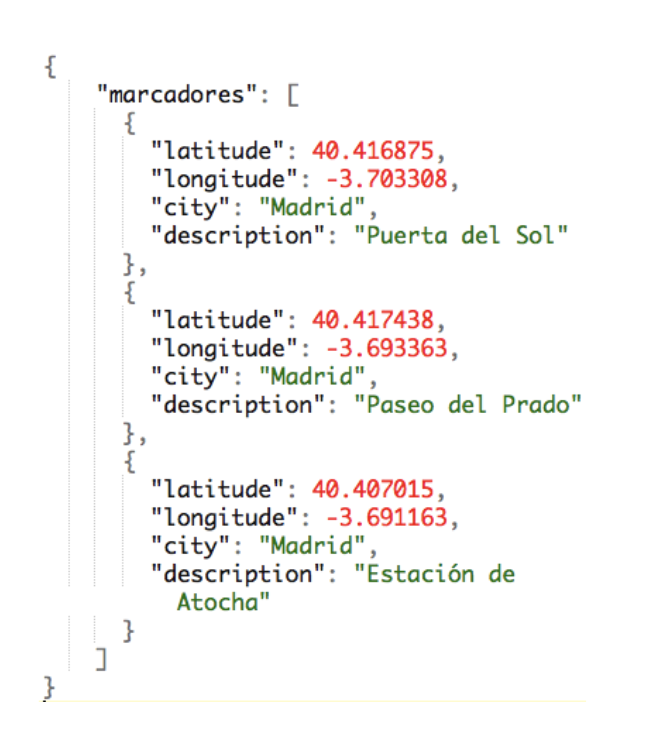

Análisis de textos a través de Twitter
por Nerea Luis @sailormerqury
Introducción
Cualquier problema de Machine Learning (data-mining, text-analysis, sentiment-analysis…) contiene las siguientes fases:

Tipos de datos
No estructurados

Estructurados
-
CSV

-
JSON 
Checklist para una correcta extracción de información
Para abordar un problema centrado en datos, como puede ser en este caso la minería de datos, debemos definir cada uno de los elementos que se describen a continuación. Esto evitará que el problema “se vaya de las manos” o que procesemos varias veces diferentes cantidades de datos porque no habíamos pensado al menos una estructura base sobre la que empezar a trabajar.
- Dominio: cuál es la base de conocimiento que necesito para abordar el problema (ej: conocimiento general, red social concreta, conocimiento técnico o científico)
- Problema: qué pretendo resolver o analizar con estos datos (ej: saber qué opinan mis clientes, la reputación de una marca, si ha gustado un capítulo de una serie…)
- Alcance: De quién provienen los datos, cómo se han generado y hasta dónde voy a analizarlos. Además, es recomendable definir también lo siguiente:
- Idioma: castellano, inglés, etc.
- Localización: ¿me vale cualquiera? ¿solo España?
- Rango de fechas: año actual, histórico, rango concreto…
- Número de datos (instancias): una estimación de cuántos datos necesito como mínimo para empezar a trabajar
- Atributos: qué necesito saber de cada instancia (datos de un cliente, información de un tweet, …)
- Tipo de datos: numéricos, categóricos, booleanos,…
- Encoding: soportar acentos, utf-8 (emojis), unicode, ISO,…
- Salida (si/no): cuál es el objetivo (ej: conocer el sentimiento, clasificar perfiles,…)
Fuentes de datos
Algunos ejemplos gratuitos de fuentes de datos estructurados y no estructurados que se pueden encontrar en Internet
https://www.kaggle.com/datasets
https://www.google.com/publicdata/directory
https://registry.opendata.aws/
https://www.reddit.com/r/datasets/
Tipos de extracción de datos
A la hora de trabajar con Machine Learning necesitamos crear nuestro dataset o conjunto de datos.
Dependiendo de si nuestras fuentes de datos están estructuradas o no, el proceso de obtención y limpieza de datos será más o menos costoso.
A través de API:
Una Application Programming Interface (API) es un servicio, generalmente provisto por terceros, para que utilicemos su plataforma y/o datos.
- Generalmente se necesitan claves únicas (API Keys)
- Se hace una llamada a la función de la API para obtener datos
- Es muy común que recibamos la consulta o el resultado en formato JSON.
A través de Scrapping:
- Requiere conocer la estructura de la web y estudiar los patrones que se repiten
- Se debe desarrollar un parser para obtener la información
- En determinados casos es ilegal
- Hay que construir el formato del output